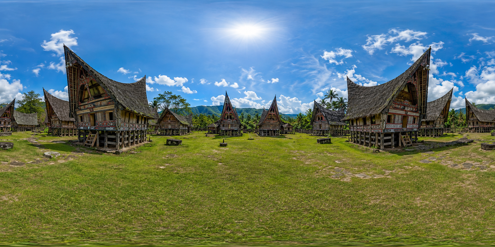

Judul Hotspot
Deskripsi penjelasan detail mengenai hotspot kebudayaan Batak.
Klik tombol (X) atau klik di luar kotak untuk melanjutkan penjelajahan
Museum Pusaka Batak
Gerakkan mouse untuk melihat sekeliling.
Arahkan lingkaran kursor (gaze) ke hotspot emas atau portal navigasi selama 1.2 detik untuk berinteraksi.
Deskripsi penjelasan detail mengenai hotspot kebudayaan Batak.
Klik tombol (X) atau klik di luar kotak untuk melanjutkan penjelajahan
